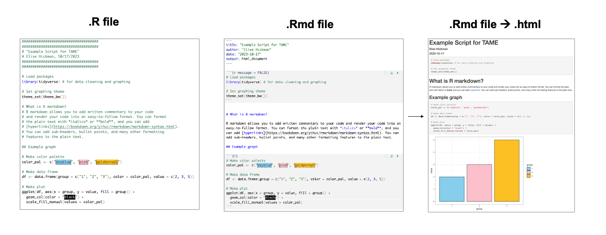
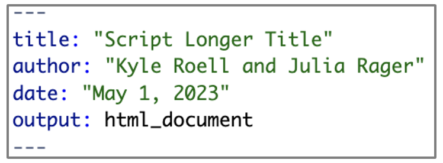

2.2 Coding “Best” Practices
This training module was developed by Kyle Roell, Alexis Payton, Elise Hickman, and Julia E. Rager.
All input files (script, data, and figures) can be downloaded from the UNC-SRP TAME2 GitHub website.
Introduction to Training Module
In this training module, we will be going over coding “best” practices. The reason we put “best” in quotes is because these practices are what we currently consider best or better, though everyone has different coding styles, annotation styles, etc that also change over time. Here, we hope to give you a sense of what we do when coding, why we do it, and why we think it is important. We will also be pointing out other guides to style, annotations, and best practices that we suggest implementing into your own coding.
Some of the questions we hope to answer in this module are:
- What type of scripting file should I use?
- What should I name my script?
- What should I put at the top of every script and why is it important?
- How should I annotate my code?
- Why are annotations important?
- How do I implement these coding practices into my own code?
- Where can I find other resources to help with coding best practices?
In the following sections, we will be addressing these questions. Keep in mind that the advice and suggestions in this section are just that: advice and suggestions. So please take them into consideration and integrate them into your own coding style as appropriate.
Scripting File Types
Two of the most common scripting file types applicable to the R language are .R (normal R files) and .Rmd (R Markdown). Normal R files appear as plain text and can be used for running any normal R code. R Markdown files are used for more intensive documentation of code and allow for a combination of code, non-code text explaining the code, and viewing of code output, tables, and figures that are rendered together into an output file (typically .html, although other formats such as .pdf are also offered). For example, TAME is coded using R Markdown, which allows us to include blocks of non-code text, hyperlinks, annotated code, schematics, and output figures all in one place. We highly encourage the use of R Markdown as the default scripting file type for R-based projects because it produces a polished final document that is easy for others to follow, whereas .R files are more appropriate for short, one-off analyses and writing in-depth functions and packages. However, code executed in normal .R files and R Markdown will produce the same results, and ultimately, which file type to use is personal preference.
See below for screenshots that demonstrate some of the stylistic differences between .R, .Rmd, and .Rmd knitted to HTML format: 
If you are interested in learning more about the basic features of R Markdown and how to use them, see the following resources:
- RStudio introduction to R Markdown
- R Markdown Cheat Sheet
- Bookdown R Markdown guide
- Including external images in R Markdown with knitr
- Interactive plots with plotly
- Interactive data tables with DT
Naming the Script File
The first thing we need to talk about, which is sometimes overlooked in the discussion of coding practices, is script file naming conventions and high level descriptive headers within a script. It is important to remember to name your code something concise, but descriptive. You want to be able to easily recognize what the script is for and does without a cumbersome, lengthy title. Some tips for naming conventions:
- Be concise, but descriptive
- Use dates when appropriate
- Avoid special characters
- Use full words if possible, avoiding non-standard acronyms
Keep in mind that each script should have a clear purpose within a given project. And, it is sometimes necessary, and often common, to have multiple scripts within one project that all pertain to different parts of the analysis. For example, it may be appropriate to have one script for data cleaning and pre-processing and another script for analyzing data. When scripting an analysis with multiple sub-analyses, some prefer to keep code for each sub-analysis separate (e.g., one file for an ANOVA and one file for a k-means analysis on the same data input), while others prefer to have longer code files with more subsections. Whichever method you choose, we recommend maintaining clear documentation that indicates locations for input and output files for each sub-analysis (e.g., whether global environment objects or output files from a previous script are needed to run the current script).
Script Headers and Annotation
Script Header
Once your script is created and named, it is generally recommended to include a header at the top of the script. The script header can be used for describing:
- Title of Script - This can be a longer or more readable name than script file name.
- Author(s) - Who wrote the script?
- Date - When was the script developed?
- Description - Provides a more detailed description of the purpose of the script and any notes or special considerations for this particular script.
In R, it is common to include multiple #, the comment operator, or a # followed by another special character, to start and end a block of coding annotation or the script header. An example of this in an .R file is shown below:
########################################################################
########################################################################
### Script Longer Title
###
### Description of what this script does!
### Also can include special notes or anything else here.
###
### Created by: Kyle Roell and Julia Rager
### Last updated: 01 May 2023
########################################################################
########################################################################This block of comment operators is common in .R but not .Rmd files because .Rmd files have their own specific type of header, known as the YAML, which contains the title, author, date, and formatting outputs for the .Rmd file:

We will now review how annotations within the script itself can make a huge difference in understanding the code within.
Annotations
Before we review coding style considerations, it is important to address code annotating. So, what are annotations and why are they important?
Annotations are notes embedded within your code as comments that will not be run. The beauty of annotating your code is that not only others, but future you, will be able to read through and better understand what a particular piece of code does. We suggest annotating your code while you write it and incorporate a lot of description. While not every single line needs an annotation, or a very detailed one, it is helpful to provide comments and annotation as much as you can while maintaining feasibility.
General annotation style
In general, annotations will be short sentences that describe what your code does or why you are executing that specific code. This can be helpful when you are defining a covariate a specific way, performing a specific analytical technique, or just generally explaining why you are doing what you’re doing.
Mid-script headings
Another common approach to annotations is to use mid-script type headings to separate out the script into various sections. For example, you might want to create distinct sections for “Loading Packages, Data, and Setup”, “Covariate Definition”, “Correlation Analysis”, “Regression Analysis”, etc. This can help you, and others, reading your script, to navigate the script more easily. It also can be more visually pleasing to see the script split up into multiple sections as opposed to one giant chunk of code interspersed with comments. Similar to above, the following example is specific to .R files. For .Rmd files, sub headers can be created by increasing the number of # before the header.
###########################################################################
###########################################################################
###
### Regression Analyses
###
### You can even add some descriptions or notes here about this section!
###
###########################################################################
# Performing logistic regression to assess association between xyz and abc
# Regression confounders: V1, V2, V3 ...
xyz.regression.output = glm(xyz ~ abc + V1 + V2 + V3, family=binomial(), data=example.data)General tips for annotations:
- Make comments that are useful and meaningful
- You don’t need to comment every single line
- In general, you probably won’t over-comment your script, so more is generally better
- That being said, don’t write super long paragraphs every few lines
- Split up your script into various sections using mid-script headings when appropriate
Quick, short comments and annotations
While it is important to provide descriptive annotations, not every one needs to be a sentence or longer. As stated previously, it is not necessary to comment every single line. Here is an example of very brief commenting:
In the example above, we can see that these short comments clearly convey what the script does – load the necessary package and indicate what the package is needed for. Short, one line annotations can also be placed after lines to clarify that specific line or within the larger mid-script headings to split up these larger sections of code.
Coding Style
Coding style is often a contentious topic! There are MANY styles of coding, and no two coders have the same exact style, even if they are following the same reference. Here, we will provide some guides to coding style and go over some of the basic, general tips for making your code readable and efficient. Here is an example showing how you can use spacing to align variable assignment:
# Example of using spacing for alignment of variable assignment
Longer_variable_name_x = 1
Short_name_y = 2Note that guides will suggest you use <- as the assignment operator. However, for most situations, <- and = will do the same thing.
For spacing around certain symbols and operators:
- Include a space after
if, before parenthesis - Include a space on either side of symbols such as
< - The first (opening) curly brace should not be on its own line, but the second (closing) should
# Example of poor style
if(Longer_variable_name_x <Short_name_y) {Short_name_y = 0}
# Example of better style
if (Longer_variable_name_x < Short_name_y) {
Short_name_y = 0
}Summary of general tips for coding style:
- Variable names
- Make them intuitive, short, but descriptive
- Use the same convention throughout (ex: separating words with
.or_)
- Data names
- Use _datatype (e.g., cytokines_df for a dataframe data type) following a short, concise name for your data so that readers know what type of input is being used AND/OR
- Clearly define important data frames or other input in your code comments (e.g., “cytokines” refers to a data frame containing all of the cytokine data from this experiment)
- Separate long lines onto two or more lines (typically for loops or functions)
- Use
<-for assignment operator - Using spacing appropriately for readability
- Alignment of lines
- After certain keywords when appropriate
- Be consistent throughout
- Example: if you use Tidyverse conventions, continue to use it throughout your script
- Try to make your code as readable as possible
Common style guides:
Script Organization
Lastly, it is important to note that organizing your script efficiently can help with readability as well. In general, as stated before, the beginning of your script should contain some sort of header lines to describe the script. The basic ordering we suggest for most scripts is:
- Header section
- Loading libraries and data
- Function definitions (if any user defined functions exist)
- Data and variables manipulation
- Analyses
While following this exact organization isn’t absolute, using this structure or something similar can greatly improve the clarity of your analyses and make them easier for others to follow.
Concluding Remarks
In this module, we demonstrate basic coding style and best practices. Please reference additional style guides (above) and create your own style from best practices that work for you. Aim to make your code understandable and readable, and consider what a future reader, including yourself, will need to understand why you wrote your code the way you did and how to apply your code to new analyses.
Using the input file provided (“Module2_2_TYKInput.R”):
- Convert the script and annotations into R Markdown format.
- Improve the organization, comments, and scripting to follow the coding best practices described in this module. List the changes you made at the bottom of the new R Markdown file.
Notes on the starting code:
- This starting code uses dummy data to demonstrate how to make a graph in R that includes bars representing the mean, with standard deviation error bars overlaid.
- You don’t need to understand every step in the code to be able to improve the existing coding style! You can run each step of the code if needed to understand better what it does.